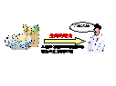

帰納的学習を用いた自然言語処理
－言葉を覚えて成長するコンピュータを目指して－
帰納的学習とは？
実例中に内在する規則を獲得することである．我々は実例から共通部分，差異部分を多段階に抽出する過程を帰納的学習と定義している．この能力は生得的能力より獲得可能なものである．
自然言語処理とは？
コンピュータが理解できる言葉を人工言語というのに対して人間が通常使う日本語や英語などの言葉を自然言語という．この自然言語をコンピュータで処理して高度に利用できるようにすることを自然言語処理という．
なぜ言語獲得を実現したいのか？
コンピュータは人間の言葉が理解できないので人間と同様に言葉を用いてコミュニケーションをとることができない．我々の研究室ではこの問題を人間の幼児が生まれながらにして持っている言語獲得の仕組み（生得的能力）をコンピュータ上に工学的に実現することで解決しようとしている．我々はこの生得的能力を「二つの事物が同じか異なるかを判断する能力」と仮定し，この仮定のもとで種々の手法を開発し，その正当性を確認するための実験を行った．
研究方針
対象データを段階的に高度化しそれに耐えうる手法を開発した.
データ
単純
手法
漢字かな混じり文
形態素解析
読みと漢字かな混じり文の組
かな漢字変換
原文と訳文の組
機械翻訳
ユーザの発話と応答の組
対話処理
複雑
かな漢字変換とは？
コンピュータにひらがなあるいはローマ字で入力された日本語文を漢字かな混じり文に変換すること．
形態素解析とは？
形態素とは意味を有する最小形態で，文字列を形態素の列に変換することを形態素解析という．形態素は近似的には単語とみなすことができる．
機械翻訳とは？
コンピュータを用いてある言語を異なる言語に翻訳すること．
対話処理とは？
コンピュータと人間が話すことができるような仕組みをコンピュータ上に開発すること．
遺伝的アルゴリズムを用いた帰納的学習
少数の実例より多様な実例を自動的に生成したり，淘汰処理を用いて誤りの原因となる規則の優先度を低下させる処理を行うために帰納的学習に遺伝的アルゴリズムの導入を行った．これをGA-IL（Inductive Learning with Genetic Algorithm)と呼ぶ．
機械翻訳への応用
遺伝的アルゴリズムを用いた帰納的学習の機械翻訳への応用を行った．
対話処理への応用
遺伝的アルゴリズムを用いた帰納的学習の対話処理への応用を行った．
üELIZA（ 1966年，J. Weizenbaum）
–精神科医のインタビュー代行システム
–キーワード方式，アドホックな方法
–うまく話題をそらして会話を継続しようとする．
–ユーザの満足度低い．
üＥＬＩＺＡの頑健さ(対話の継続）とＧＡ‐ＩＬによる具体的な応答
–ユーザの興味がある話題にも追従できる．
ü雑談対象の対話例からの学習型音声対話システム
ü遺伝的アルゴリズムを用いた帰納的学習による音声対話処
理手法
ü帰納的学習
原文とその訳文から翻訳ルールを獲得
ü原文と訳文 データの異なり大きい
–帰納的学習だけでは学習能力不十分
遺伝的アルゴリズムを導入
ü遺伝的アルゴリズムを用いた帰納的学習による機械翻訳手法
ü学習型の機械翻訳手法 膨大な実例必要
üGAの交叉処理
–少数の実例より大量の翻訳例を自動的に生成
–多くの翻訳ルールを得る．
üシステム全体としてGAを構成
–翻訳結果をフィードバック
誤った翻訳ルールを淘汰
その他の応用
•携帯電話の日本語文高速入力手法
•電子メイルの返信文自動生成手法
•音声波形からの帰納的学習による音声翻訳手法
•言語非依存の単語分割手法，構文解析手法，意味解析手法